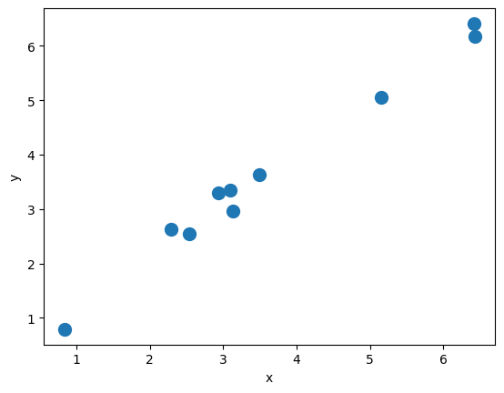
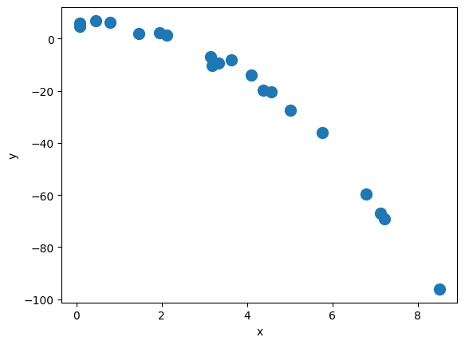
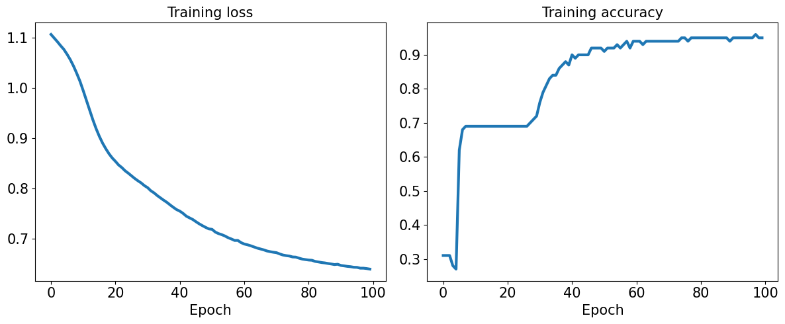
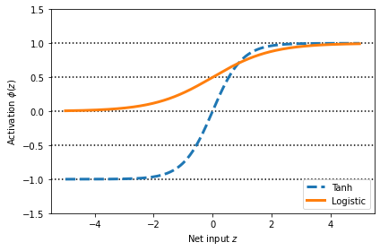

12. Using PyTorch to build Neural Networks#
In this notebook, we will leveraging the PyTorch Neural Network module (torch.nn)
from IPython.display import Image as IPythonImage
%matplotlib inline
import torch
import numpy as np
import matplotlib.pyplot as plt
import torch
device = torch.device("cuda" if torch.cuda.is_available() else "cpu")
print(device)
cuda
if device.type == 'cuda':
print(torch.cuda.get_device_name(0))
else:
print('cpu')
Tesla T4
12.1. Building a linear regression model#
X_train = np.random.uniform(0, 9, size=(10, 1)).reshape(-1, 1).astype('float32')
noise = np.random.normal(0, 0.25, size=(10, 1)).astype('float32')
y_train = 1.0*X_train+noise
plt.plot(X_train, y_train, 'o', markersize=10)
plt.xlabel('x')
plt.ylabel('y')
plt.show()

from torch.utils.data import TensorDataset
from torch.utils.data import DataLoader
X_train_norm = (X_train - np.mean(X_train)) / np.std(X_train)
X_train_norm = torch.from_numpy(X_train_norm)
# On some computers the explicit cast to .float() is
# necessary
y_train = torch.from_numpy(y_train).float()
train_ds = TensorDataset(X_train_norm, y_train)
batch_size = 1
train_dl = DataLoader(train_ds, batch_size, shuffle=True)
torch.manual_seed(1) # sets the seed to generate random numbers
#------------------------------------------------------------------------------------------------
# Initialize the weights
weight = torch.randn(1) # argument specify shape of the tensor
# The following sets the requires_grad attribute of the tensor to True;
# PyTorch will track operations on this tensor, and gradients will be computed for it during backpropagation
weight.requires_grad_() # You want to optimize the parameter 'weight'
# Initialize the bias tensor filled with zeros with a shape of (1,), and it sets requires_grad=True
bias = torch.zeros(1, requires_grad=True)
# Try also weight = torch.randn(1, requires_grad=True)
#------------------------------------------------------------------------------------------------
def loss_fn(input, target):
return (input-target).pow(2).mean()
def model(xb):
# The @ operator denotes matrix multiplication (see PEP 465) / more readable than torch.matmul()
return xb @ weight + bias
learning_rate = 0.001
num_epochs = 200
log_epochs = 10
for epoch in range(num_epochs):
for x_batch, y_batch in train_dl:
pred = model(x_batch)
loss = loss_fn(pred, y_batch)
loss.backward() # After calling loss.backward(), the gradients are computed and stored in the .grad attributes of the tensors
with torch.no_grad(): # used to disable temporarily gradient tracking during the parameter update, memory efficiency
weight -= weight.grad * learning_rate
bias -= bias.grad * learning_rate
# Zeroing gradients after updating; essential to reset their gradients to zero for the next iteration of the training loop
# By default, PyTorch accumulates gradients. If you don’t zero the gradients, they will accumulate over multiple iterations (batches)
weight.grad.zero_()
bias.grad.zero_()
if epoch % log_epochs==0:
print(f'Epoch {epoch} Loss {loss.item():.4f}') # item() method used to retrieve the value of a scalar tensor as a standard Python number
Epoch 0 Loss 9.5583
Epoch 10 Loss 12.7966
Epoch 20 Loss 3.6506
Epoch 30 Loss 8.5834
Epoch 40 Loss 2.7614
Epoch 50 Loss 1.6168
Epoch 60 Loss 1.9484
Epoch 70 Loss 0.9772
Epoch 80 Loss 0.8479
Epoch 90 Loss 0.4779
Epoch 100 Loss 0.3836
Epoch 110 Loss 0.3927
Epoch 120 Loss 0.0268
Epoch 130 Loss 0.0073
Epoch 140 Loss 0.1387
Epoch 150 Loss 0.0047
Epoch 160 Loss 0.0887
Epoch 170 Loss 0.0960
Epoch 180 Loss 0.0856
Epoch 190 Loss 0.0602
print(f"Final Parameters: {weight.item():1.3f}, {bias.item():1.3f}")
X_test = np.linspace(0, 9, num=100, dtype='float32').reshape(-1, 1)
X_test_norm = (X_test - np.mean(X_train)) / np.std(X_train)
X_test_norm = torch.from_numpy(X_test_norm)
y_pred = model(X_test_norm).detach().numpy()
fig = plt.figure(figsize=(13, 5))
ax = fig.add_subplot(1, 2, 1)
plt.plot(X_train_norm, y_train, 'o', markersize=10)
plt.plot(X_test_norm, y_pred, '--', lw=3)
plt.legend(['Training examples', 'Linear Reg.'], fontsize=15)
ax.set_xlabel('x', size=15)
ax.set_ylabel('y', size=15)
ax.tick_params(axis='both', which='major', labelsize=15)
plt.show()
Final Parameters: 1.617, 3.615
Model training via torch.nn and torch.optim modules
import torch.nn as nn
input_size = 1
output_size = 1
model = nn.Linear(input_size, output_size).to(device)
loss_fn = nn.MSELoss(reduction='mean')
optimizer = torch.optim.SGD(model.parameters(), lr=learning_rate)
for epoch in range(num_epochs):
for x_batch, y_batch in train_dl:
x_batch = x_batch.to(device) # Move to GPU
y_batch = y_batch.to(device) # Move to GPU
# 1. Generate predictions
pred = model(x_batch)[:,0]
# 2. Calculate loss
loss = loss_fn(pred, y_batch.view(-1))
# 3. Compute gradients
loss.backward()
# 4. Update parameters using gradients
optimizer.step()
# 5. Reset the gradients to zero
optimizer.zero_grad()
if epoch % log_epochs==0:
print(f'Epoch {epoch} Loss {loss.item():.4f}')
Epoch 0 Loss 10.1449
Epoch 10 Loss 19.9749
Epoch 20 Loss 13.2688
Epoch 30 Loss 13.8637
Epoch 40 Loss 1.3928
Epoch 50 Loss 0.0070
Epoch 60 Loss 1.2209
Epoch 70 Loss 0.9744
Epoch 80 Loss 0.1476
Epoch 90 Loss 0.0284
Epoch 100 Loss 1.0836
Epoch 110 Loss 0.7530
Epoch 120 Loss 0.2270
Epoch 130 Loss 0.0053
Epoch 140 Loss 0.0016
Epoch 150 Loss 0.0002
Epoch 160 Loss 0.0001
Epoch 170 Loss 0.0007
Epoch 180 Loss 0.0783
Epoch 190 Loss 0.0000
print(f"Final Parameters:, {model.weight.item():1.4f}, {model.bias.item():1.4f}")
X_test = np.linspace(0, 9, num=100, dtype='float32').reshape(-1, 1)
X_test_norm = (X_test - np.mean(X_train)) / np.std(X_train)
X_test_norm = torch.from_numpy(X_test_norm)
y_pred = model(X_test_norm.to(device)).detach() # detach() creates a new tensor deached from the computation graph; it shares the same data as the original tensor but does not require gradients
if(device.type == 'cuda'):
# Move the test data and predictions to CPU for plotting
X_test_norm = X_test_norm.cpu().numpy() # Move to CPU
y_pred = y_pred.cpu().numpy() # Move to CPU
else:
X_test_norm = X_test_norm.detach().numpy()
y_pred = y_pred.detach().numpy()
fig = plt.figure(figsize=(13, 5))
ax = fig.add_subplot(1, 2, 1)
plt.plot(X_train_norm.detach().numpy(), y_train.detach().numpy(), 'o', markersize=10)
plt.plot(X_test_norm, y_pred, '--', lw=3)
plt.legend(['Training examples', 'Linear reg.'], fontsize=15)
ax.set_xlabel('x', size=15)
ax.set_ylabel('y', size=15)
ax.tick_params(axis='both', which='major', labelsize=15)
plt.show()
Final Parameters:, 1.7936, 4.7006
12.2. Exercise: train a regression model for the following polynomial dataset#
X_train = np.random.uniform(0, 9, size=(20, 1)).reshape(-1, 1).astype('float32')
noise = np.random.normal(0, 2., size=(20, 1)).astype('float32')
b = 5
a1 = 1.0
a2 = -1.5
y_train = b + a1*X_train + a2*X_train**2 + noise
plt.plot(X_train, y_train, 'o', markersize=10)
plt.xlabel('x')
plt.ylabel('y')
plt.show()
print(np.shape(X_train), np.shape(y_train))

(20, 1) (20, 1)
### Augment training dataset
# Create the squared feature
X_train_squared = X_train ** 2
# Concatenate the original and squared features
X_train_augmented = np.concatenate((X_train, X_train_squared), axis=1)
#print(np.shape(X_train), np.shape(X_train_augmented), np.shape(y_train))
#print(type(X_train_augmented), type(y_train))
#print(X_train_augmented)
#print(y_train)
# Normalize each feature independently
mean_poly = np.mean(X_train_augmented, axis=0)
std_poly = np.std(X_train_augmented, axis=0)
print(np.shape(mean_poly), np.shape(std_poly))
X_train_norm = (X_train_augmented - mean_poly) / std_poly
X_train_norm = torch.from_numpy(X_train_norm) # Convert to PyTorch tensor
print(np.shape(X_train_norm), np.shape(y_train))
print(type(X_train_norm), type(y_train))
# On some computers the explicit cast to .float() is
# necessary
y_train = torch.from_numpy(y_train).float()
train_ds = TensorDataset(X_train_norm, y_train)
batch_size = 1
train_dl = DataLoader(train_ds, batch_size, shuffle=True)
(2,) (2,)
torch.Size([20, 2]) (20, 1)
<class 'torch.Tensor'> <class 'numpy.ndarray'>
num_epochs = 1000
learning_rate = 0.005
input_size = 2
output_size = 1
model_poly = nn.Linear(input_size, output_size)
loss_fn = nn.MSELoss(reduction='mean')
optimizer = torch.optim.SGD(model_poly.parameters(), lr=learning_rate)
for epoch in range(num_epochs):
for x_batch, y_batch in train_dl:
# 1. Generate predictions
pred = model_poly(x_batch)
# 2. Calculate loss
loss = loss_fn(pred, y_batch)
# 3. Compute gradients
loss.backward()
# 4. Update parameters using gradients
optimizer.step()
# 5. Reset the gradients to zero
optimizer.zero_grad()
if epoch % log_epochs==0:
print(f'Epoch {epoch} Loss {loss.item():.4f}')
Epoch 0 Loss 32.6632
Epoch 10 Loss 21.3791
Epoch 20 Loss 12.2827
Epoch 30 Loss 14.2199
Epoch 40 Loss 2.7825
Epoch 50 Loss 1.9159
Epoch 60 Loss 4.0776
Epoch 70 Loss 1.5430
Epoch 80 Loss 5.6205
Epoch 90 Loss 1.1090
Epoch 100 Loss 1.4345
Epoch 110 Loss 0.6745
Epoch 120 Loss 0.9173
Epoch 130 Loss 6.0047
Epoch 140 Loss 0.2339
Epoch 150 Loss 5.2286
Epoch 160 Loss 8.5513
Epoch 170 Loss 0.1107
Epoch 180 Loss 0.5295
Epoch 190 Loss 4.2979
Epoch 200 Loss 0.2902
Epoch 210 Loss 0.0037
Epoch 220 Loss 1.0230
Epoch 230 Loss 11.6687
Epoch 240 Loss 1.2393
Epoch 250 Loss 5.7212
Epoch 260 Loss 0.0315
Epoch 270 Loss 5.3659
Epoch 280 Loss 1.8254
Epoch 290 Loss 0.3921
Epoch 300 Loss 1.7461
Epoch 310 Loss 0.3447
Epoch 320 Loss 0.0131
Epoch 330 Loss 2.5676
Epoch 340 Loss 0.8876
Epoch 350 Loss 2.3693
Epoch 360 Loss 13.3046
Epoch 370 Loss 1.0644
Epoch 380 Loss 3.2778
Epoch 390 Loss 1.1224
Epoch 400 Loss 0.2113
Epoch 410 Loss 3.8464
Epoch 420 Loss 0.2942
Epoch 430 Loss 2.0957
Epoch 440 Loss 3.1977
Epoch 450 Loss 0.1748
Epoch 460 Loss 0.1572
Epoch 470 Loss 0.3085
Epoch 480 Loss 0.2015
Epoch 490 Loss 0.7832
Epoch 500 Loss 15.2628
Epoch 510 Loss 0.7093
Epoch 520 Loss 0.2744
Epoch 530 Loss 2.5628
Epoch 540 Loss 3.6625
Epoch 550 Loss 3.0989
Epoch 560 Loss 15.4109
Epoch 570 Loss 3.0608
Epoch 580 Loss 3.1260
Epoch 590 Loss 3.7288
Epoch 600 Loss 1.5427
Epoch 610 Loss 2.0046
Epoch 620 Loss 0.3220
Epoch 630 Loss 2.0005
Epoch 640 Loss 1.5980
Epoch 650 Loss 0.3075
Epoch 660 Loss 1.8195
Epoch 670 Loss 0.3797
Epoch 680 Loss 2.9729
Epoch 690 Loss 1.5089
Epoch 700 Loss 1.8321
Epoch 710 Loss 0.1124
Epoch 720 Loss 2.9207
Epoch 730 Loss 0.0792
Epoch 740 Loss 0.2893
Epoch 750 Loss 3.4055
Epoch 760 Loss 3.5630
Epoch 770 Loss 1.7559
Epoch 780 Loss 6.8304
Epoch 790 Loss 6.8233
Epoch 800 Loss 0.3230
Epoch 810 Loss 1.6340
Epoch 820 Loss 1.5515
Epoch 830 Loss 2.6084
Epoch 840 Loss 0.3356
Epoch 850 Loss 3.4277
Epoch 860 Loss 3.7376
Epoch 870 Loss 6.8584
Epoch 880 Loss 0.5519
Epoch 890 Loss 0.4942
Epoch 900 Loss 1.6023
Epoch 910 Loss 1.6310
Epoch 920 Loss 12.2862
Epoch 930 Loss 2.5923
Epoch 940 Loss 1.6127
Epoch 950 Loss 1.8292
Epoch 960 Loss 0.2807
Epoch 970 Loss 0.5137
Epoch 980 Loss 1.7905
Epoch 990 Loss 15.5968
print(next(model_poly.parameters()).device)
cpu
print(f"Final Parameters:, {model.weight.item():1.4f}, {model.bias.item():1.4f}")
X_test = np.linspace(0, 9, num=1000, dtype='float32').reshape(-1, 1)
# Create the squared feature
X_test_squared = X_test ** 2
# Concatenate the original and squared features
X_test_augmented = np.concatenate((X_test, X_test_squared), axis=1)
X_test_norm = (X_test_augmented - mean_poly) / std_poly
X_test_norm = torch.from_numpy(X_test_norm)
y_test_pred = model_poly(X_test_norm).detach() # detach() creates a new tensor deached from the computation graph; it shares the same data as the original tensor but does not require gradients
fig = plt.figure(figsize=(13, 5))
ax = fig.add_subplot(1, 1, 1)
plt.plot(X_train_norm.detach()[:,0].numpy(), y_train.detach().numpy(), 'o', markersize=10)
plt.plot(X_test_norm.detach()[:,0].numpy(), y_test_pred.detach().numpy(), '--', lw=3)
plt.legend(['Training examples', 'test curve'], fontsize=15)
ax.set_xlabel('x', size=15)
ax.set_ylabel('y', size=15)
ax.tick_params(axis='both', which='major', labelsize=15)
plt.show()
print(np.shape(X_test_norm), np.shape(y_test_pred))
Final Parameters:, 1.5969, 3.6132
torch.Size([1000, 2]) torch.Size([1000, 1])
12.3. Building an MLP for Classification#
from sklearn.datasets import load_iris
from sklearn.model_selection import train_test_split
iris = load_iris()
X = iris['data']
y = iris['target']
X_train, X_test, y_train, y_test = train_test_split(
X, y, test_size=1./3, random_state=1)
from torch.utils.data import TensorDataset
from torch.utils.data import DataLoader
X_train_norm = (X_train - np.mean(X_train)) / np.std(X_train)
X_train_norm = torch.from_numpy(X_train_norm).float()
y_train = torch.from_numpy(y_train)
train_ds = TensorDataset(X_train_norm, y_train)
torch.manual_seed(1)
batch_size = 2
train_dl = DataLoader(train_ds, batch_size, shuffle=True)
# For a list of all available layers http://pytorch.org/docs/stable/nn.html
class Model(nn.Module):
def __init__(self, input_size, hidden_size, output_size):
super().__init__()
self.layer1 = nn.Linear(input_size, hidden_size)
self.layer2 = nn.Linear(hidden_size, output_size)
def forward(self, x):
x = self.layer1(x)
x = nn.Sigmoid()(x)
x = self.layer2(x)
x = nn.Softmax(dim=1)(x)
return x
input_size = X_train_norm.shape[1]
hidden_size = 16
output_size = 3
model = Model(input_size, hidden_size, output_size).to(device) # Move model to GPU
learning_rate = 0.001
loss_fn = nn.CrossEntropyLoss()
# https://pytorch.org/docs/stable/generated/torch.nn.CrossEntropyLoss.html
# Adam -Adaptive Moment Estimation- optimizer:
# It combines the benefits of AdaGrad and RMSProp
# More details can be found in https://github.com/cfteach/ml4hep/blob/main/gradient/gradient_descent.ipynb
optimizer = torch.optim.Adam(model.parameters(), lr=learning_rate)
num_epochs = 100
loss_hist = [0] * num_epochs
accuracy_hist = [0] * num_epochs
for epoch in range(num_epochs):
for x_batch, y_batch in train_dl:
# Move batch to GPU
x_batch = x_batch.to(device)
y_batch = y_batch.to(device)
pred = model(x_batch)
loss = loss_fn(pred, y_batch.long())
loss.backward()
optimizer.step()
optimizer.zero_grad()
loss_hist[epoch] += loss.item()*y_batch.size(0)
is_correct = (torch.argmax(pred, dim=1) == y_batch).float()
accuracy_hist[epoch] += is_correct.sum()
loss_hist[epoch] /= len(train_dl.dataset)
accuracy_hist[epoch] /= len(train_dl.dataset)
if device.type == 'cuda':
accuracy_hist = [acc.cpu() for acc in accuracy_hist]
fig = plt.figure(figsize=(12, 5))
ax = fig.add_subplot(1, 2, 1)
ax.plot(loss_hist, lw=3)
ax.set_title('Training loss', size=15)
ax.set_xlabel('Epoch', size=15)
ax.tick_params(axis='both', which='major', labelsize=15)
ax = fig.add_subplot(1, 2, 2)
ax.plot(accuracy_hist, lw=3)
ax.set_title('Training accuracy', size=15)
ax.set_xlabel('Epoch', size=15)
ax.tick_params(axis='both', which='major', labelsize=15)
plt.tight_layout()
plt.show()

Accuracy for test dataset
# Normalize X_test
X_test_norm = (X_test - np.mean(X_train)) / np.std(X_train)
X_test_norm = torch.from_numpy(X_test_norm).float().to(device) # Move to device
# Check if y_test is already a tensor and move it to the device
if isinstance(y_test, torch.Tensor):
y_test = y_test.to(device) # Move to device
else:
y_test = torch.from_numpy(y_test).float().to(device) # Convert from numpy if not already a tensor
# Make predictions
pred_test = model(X_test_norm)
# Move pred_test to CPU if necessary for processing, but ensure both are on the same device
if device.type == 'cuda':
pred_test = pred_test.cpu() # Move predictions to CPU
# Make sure y_test is on the same device as pred_test
if y_test.device != pred_test.device:
y_test = y_test.cpu() # Move y_test to CPU if needed
# Calculate accuracy
correct = (torch.argmax(pred_test, dim=1) == y_test).float()
accuracy = correct.mean()
print(f'Test Acc.: {accuracy:.4f}')
Test Acc.: 0.9800
12.4. Saving and reloading the trained model#
path = 'iris_classifier.pt'
torch.save(model, path)
model_new = torch.load(path)
model_new.eval()
<ipython-input-68-ddbeb3503457>:1: FutureWarning: You are using `torch.load` with `weights_only=False` (the current default value), which uses the default pickle module implicitly. It is possible to construct malicious pickle data which will execute arbitrary code during unpickling (See https://github.com/pytorch/pytorch/blob/main/SECURITY.md#untrusted-models for more details). In a future release, the default value for `weights_only` will be flipped to `True`. This limits the functions that could be executed during unpickling. Arbitrary objects will no longer be allowed to be loaded via this mode unless they are explicitly allowlisted by the user via `torch.serialization.add_safe_globals`. We recommend you start setting `weights_only=True` for any use case where you don't have full control of the loaded file. Please open an issue on GitHub for any issues related to this experimental feature.
model_new = torch.load(path)
Model(
(layer1): Linear(in_features=4, out_features=16, bias=True)
(layer2): Linear(in_features=16, out_features=3, bias=True)
)
pred_test = model_new(X_test_norm)
correct = (torch.argmax(pred_test, dim=1) == y_test).float()
accuracy = correct.mean()
print(f'Test Acc.: {accuracy:.4f}')
Test Acc.: 0.9800
#if you want to save only the learned parameters
path = 'iris_classifier_state.pt'
torch.save(model.state_dict(), path)
model_new = Model(input_size, hidden_size, output_size)
model_new.load_state_dict(torch.load(path))
<ipython-input-71-b21dbd0d4824>:2: FutureWarning: You are using `torch.load` with `weights_only=False` (the current default value), which uses the default pickle module implicitly. It is possible to construct malicious pickle data which will execute arbitrary code during unpickling (See https://github.com/pytorch/pytorch/blob/main/SECURITY.md#untrusted-models for more details). In a future release, the default value for `weights_only` will be flipped to `True`. This limits the functions that could be executed during unpickling. Arbitrary objects will no longer be allowed to be loaded via this mode unless they are explicitly allowlisted by the user via `torch.serialization.add_safe_globals`. We recommend you start setting `weights_only=True` for any use case where you don't have full control of the loaded file. Please open an issue on GitHub for any issues related to this experimental feature.
model_new.load_state_dict(torch.load(path))
<All keys matched successfully>
pred_test = model_new(X_test_norm)
correct = (torch.argmax(pred_test, dim=1) == y_test).float()
accuracy = correct.mean()
print(f'Test Acc.: {accuracy:.4f}')
Test Acc.: 0.9800
12.6. Appendix#
12.7. Choosing activation functions for MLP#
Logistic function recap
import numpy as np
X = np.array([1, 1.4, 2.5]) ## first value must be 1
w = np.array([0.4, 0.3, 0.5])
def net_input(X, w):
return np.dot(X, w)
def logistic(z):
return 1.0 / (1.0 + np.exp(-z))
def logistic_activation(X, w):
z = net_input(X, w)
return logistic(z)
print(f'P(y=1|x) = {logistic_activation(X, w):.3f}')
P(y=1|x) = 0.888
# W : array with shape = (n_output_units, n_hidden_units+1)
# note that the first column are the bias units
W = np.array([[1.1, 1.2, 0.8, 0.4],
[0.2, 0.4, 1.0, 0.2],
[0.6, 1.5, 1.2, 0.7]])
# A : data array with shape = (n_hidden_units + 1, n_samples)
# note that the first column of this array must be 1
A = np.array([[1, 0.1, 0.4, 0.6]])
Z = np.dot(W, A[0])
y_probas = logistic(Z)
print('Net Input: \n', Z)
print('Output Units:\n', y_probas)
Net Input:
[1.78 0.76 1.65]
Output Units:
[0.85569687 0.68135373 0.83889105]
y_class = np.argmax(Z, axis=0)
print('Predicted class label:', y_class)
Predicted class label: 0
Estimating class probabilities in multiclass classification via the softmax function
def softmax(z):
return np.exp(z) / np.sum(np.exp(z))
y_probas = softmax(Z)
print('Probabilities:\n', y_probas)
np.sum(y_probas)
Probabilities:
[0.44668973 0.16107406 0.39223621]
1.0
torch.softmax(torch.from_numpy(Z), dim=0)
tensor([0.4467, 0.1611, 0.3922], dtype=torch.float64)
Broadening the output spectrum using a hyperbolic tangent
import matplotlib.pyplot as plt
%matplotlib inline
def tanh(z):
e_p = np.exp(z)
e_m = np.exp(-z)
return (e_p - e_m) / (e_p + e_m)
z = np.arange(-5, 5, 0.005)
log_act = logistic(z)
tanh_act = tanh(z)
plt.ylim([-1.5, 1.5])
plt.xlabel('Net input $z$')
plt.ylabel('Activation $\phi(z)$')
plt.axhline(1, color='black', linestyle=':')
plt.axhline(0.5, color='black', linestyle=':')
plt.axhline(0, color='black', linestyle=':')
plt.axhline(-0.5, color='black', linestyle=':')
plt.axhline(-1, color='black', linestyle=':')
plt.plot(z, tanh_act,
linewidth=3, linestyle='--',
label='Tanh')
plt.plot(z, log_act,
linewidth=3,
label='Logistic')
plt.legend(loc='lower right')
plt.tight_layout()
plt.show()

np.tanh(z)
array([-0.9999092 , -0.99990829, -0.99990737, ..., 0.99990644,
0.99990737, 0.99990829])
torch.tanh(torch.from_numpy(z))
tensor([-0.9999, -0.9999, -0.9999, ..., 0.9999, 0.9999, 0.9999],
dtype=torch.float64)
from scipy.special import expit
expit(z)
array([0.00669285, 0.00672617, 0.00675966, ..., 0.99320669, 0.99324034,
0.99327383])
torch.sigmoid(torch.from_numpy(z))
tensor([0.0067, 0.0067, 0.0068, ..., 0.9932, 0.9932, 0.9933],
dtype=torch.float64)
Rectified linear unit activation
torch.relu(torch.from_numpy(z))
tensor([0.0000, 0.0000, 0.0000, ..., 4.9850, 4.9900, 4.9950],
dtype=torch.float64)